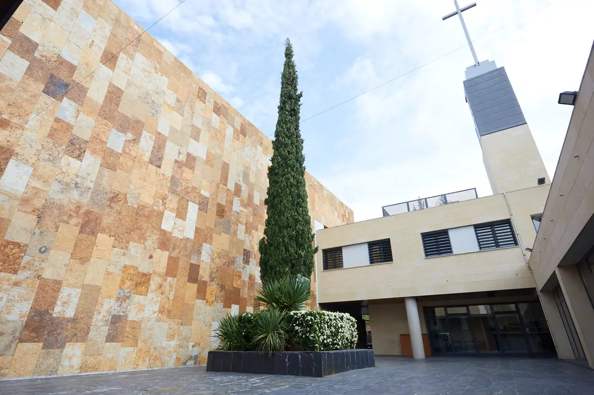
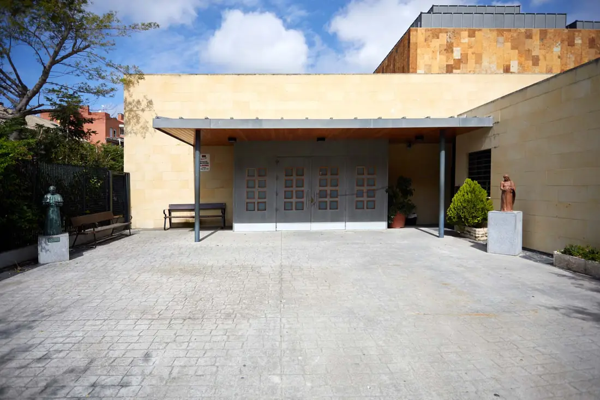
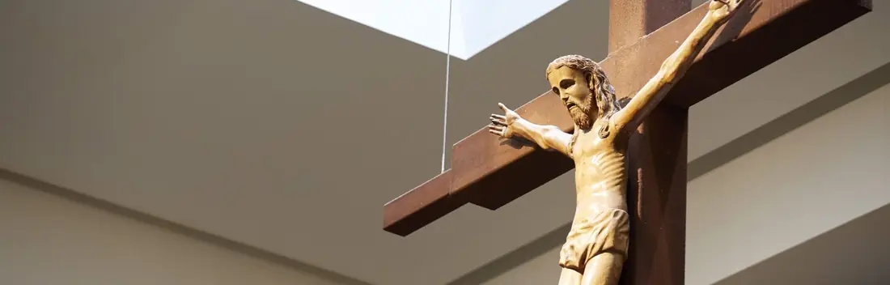
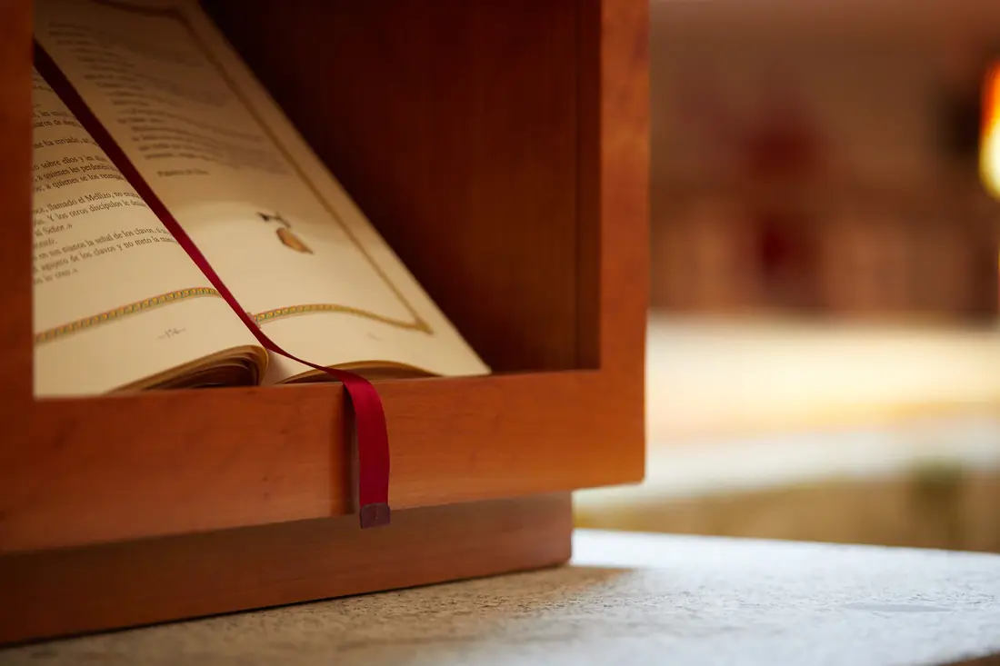
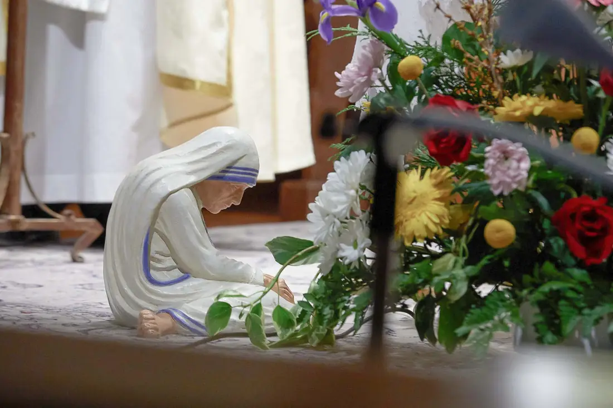
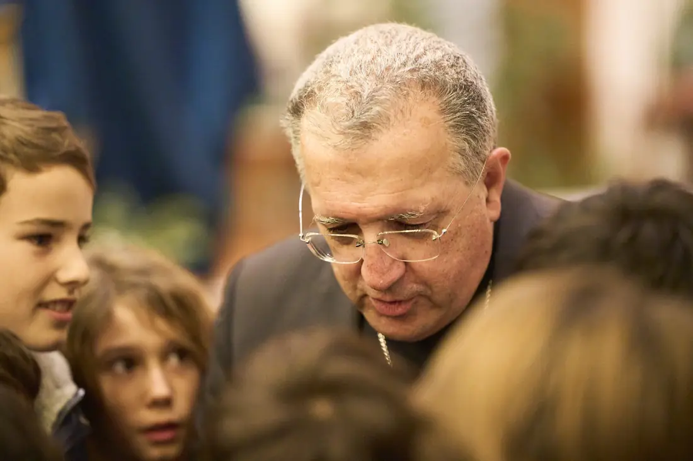
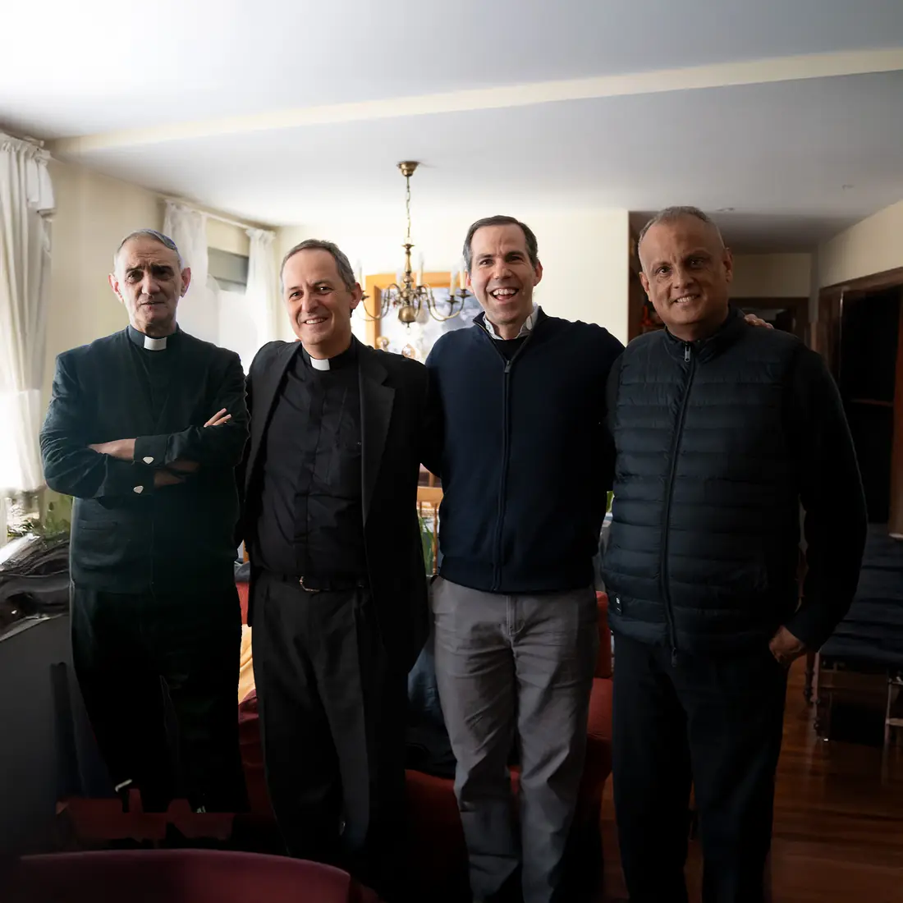

La parroquia
Nacida en 2001 en la diócesis de Getafe, por petición de su primer obispo.

Bienvenido al Santo Cristo
La parroquia Santo Cristo de la Misericordia nació en el seno de la diócesis de Getafe, por petición de su primer obispo, don Francisco José Pérez y Fernández Golfín, en el año 2001.
Diseñada y construida por los arquitectos Del Río Sánchez, es el centro de una gran cantidad de fieles de Boadilla del Monte y de todo Madrid. Está en el sector B de la localidad y forma parte del arciprestazgo de Villaviciosa, que abarca Boadilla, Brunete, Villaviciosa de Odón, Villanueva de la Cañada y Quijorna.
En ella se pueden venerar reliquias de distintos santos y contemplar esculturas de la artista Elena Pilar Palomino-Borbón.
- Templos
- 2
- Aforo del templo dominical
- 800
- Aforo del templo de diario
- 200
- Patios exteriores
- 3
La casa, por dentro






